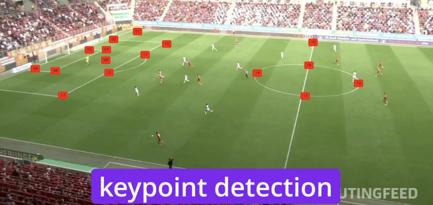
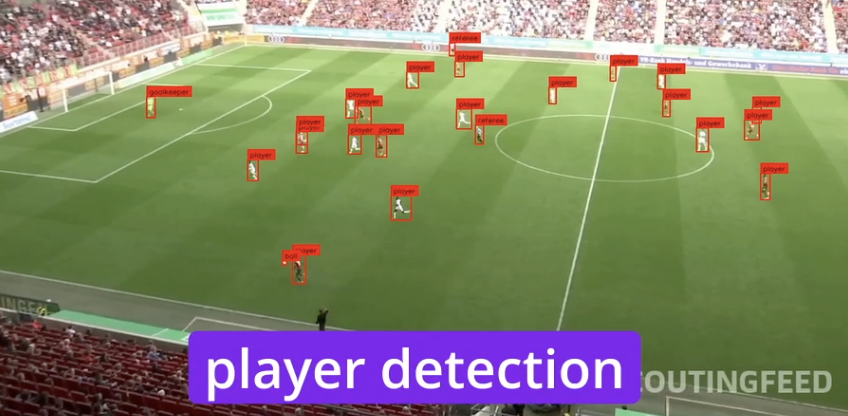
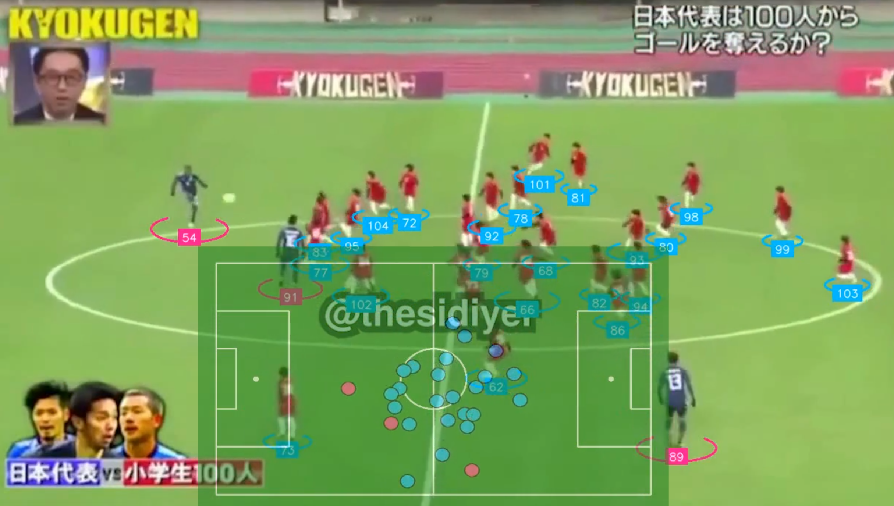
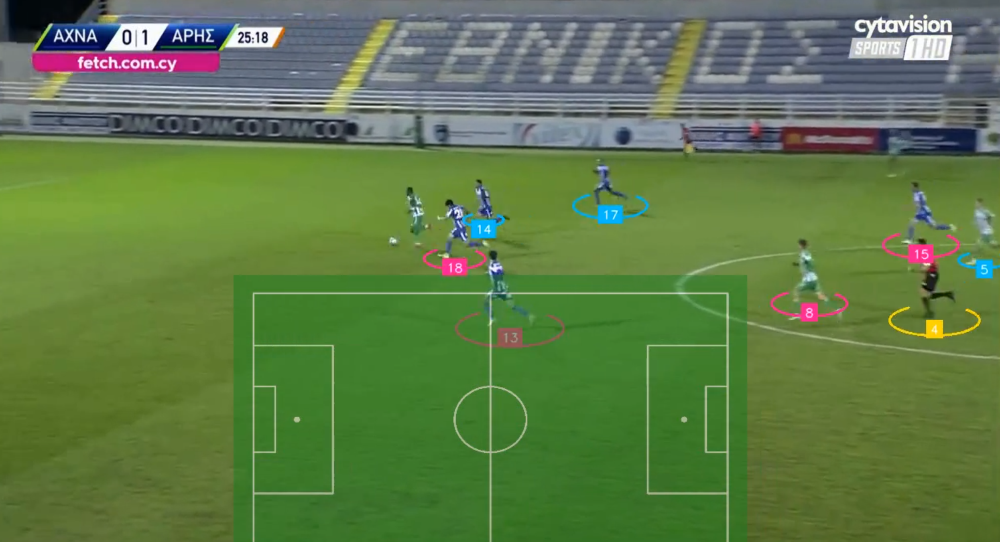
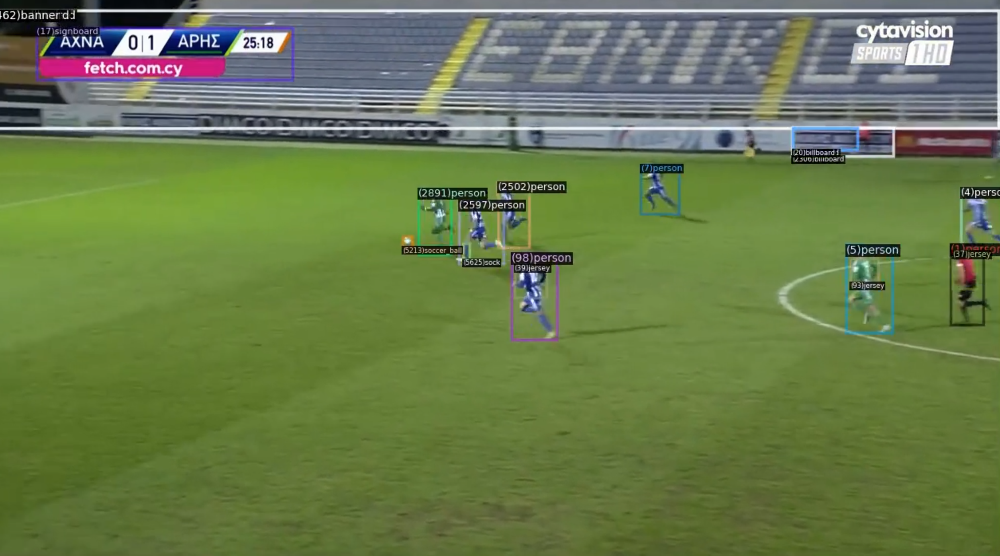
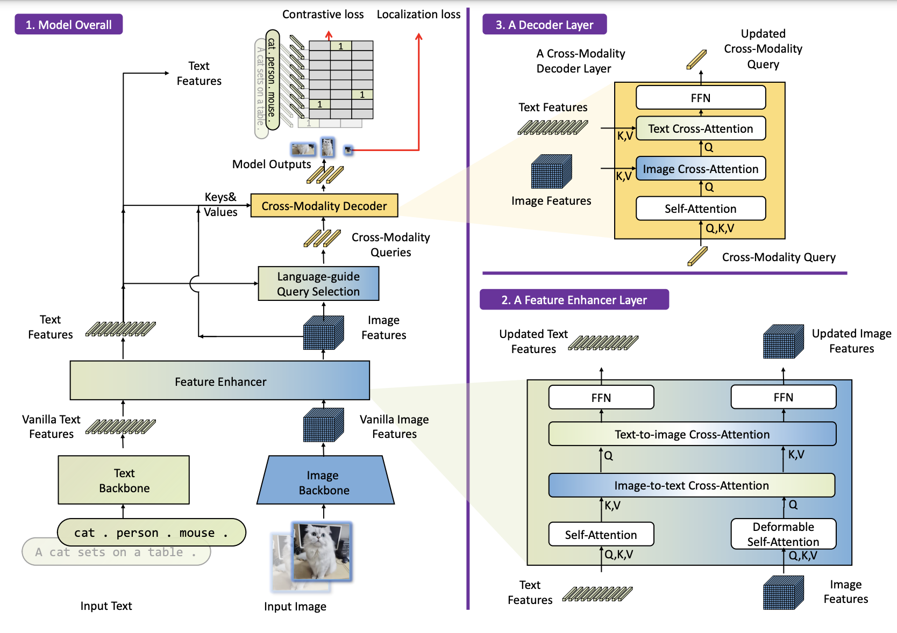
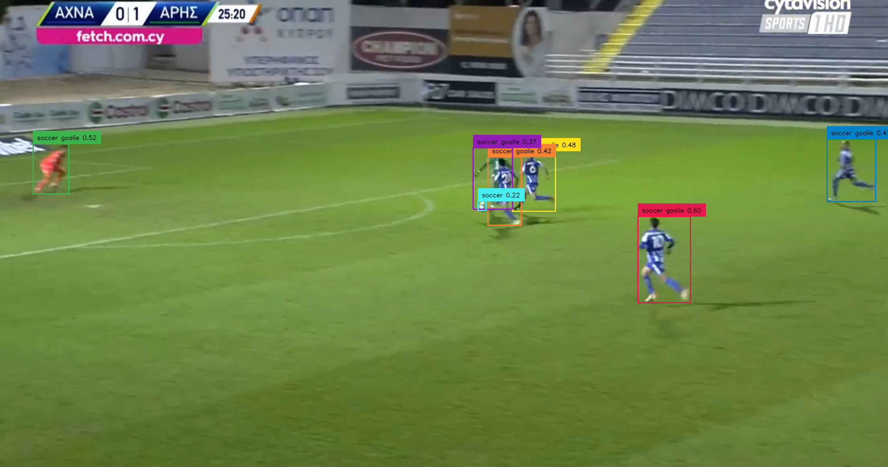
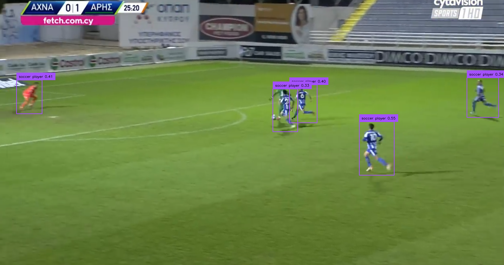

I was intrigued to see this example where a variety (at least 5) computer vision techniques to create visual appealing analytics from soccer game footage. Soccer fans and coaches maenjoy this.
This is an open source demo from Roboflow, and is easy to reproduce. Since it is a proof of concept, more work needs to be done to make it work for other real world videos, where there a large portion of the soccer field is not visible, or when the camera moved fast (which happens quite often). This is a common challenge for practical computer vision: it can be hard to make an impressive model work on your data.
Below I share a workflow to reproduce both success and limitations of this soccer tracking example, and some ideas to improve it to make it work on more challenging data. Similar techniques can be applied to other sports, like tennis, (American) football, basketball, pickle ball, etc.
Reproducing the birds-eye view creation
Under the hood
The computer vision models and algorithms under the hood include:
- A keypoint detection (pose estimation) model for 32 keypoints on the soccer pitch (Yolo-v8, 70M, training notebook, mAP=0.99, 1 hour on NVidia T4, trained on hundreds of images).

- An object detection model for players, referrees and goal keepers (Yolo-v8, 68M, training notebook, mAP=0.79, 40min on NNivida L4).

- Another object detection model for the ball (Yolo-v8, 68M, training notebook, mAP=0.93, 1.3 hours on NVidia A100). The ball is very small in the image, so it is hard to detect.
- A multi-object tracking model to track the players and the ball (Bytetrack, implementation and python API).
- A vision embedding model and clustering algorithm for team identification. SigLIP is used to extract embedding vectors from cropped players. UMAP is used for dimensionality reduction. K-means is used for clustering. Also Resolve the team IDs for detected goalkeepers based on the proximity to team centroids (based on player locations).
- An image registration/stitching algorithm to create the bird’s eye view. Homography is estimated between the pitch keypoints and the reference coornidates of the pitch, using OpenCV’s findHomography. The pitch in the footage is then warped to a top-down view using perspectiveTransform.
- Player re-identification models (e.g. MOTIP). When the footage is cut or camera is changed to a different angle, the player IDs are lost. We need to re-identify the players in order to connect the player tracks across different clips. I did not find the implemetation in this POC.
Does it work on other soccer videos?
I picked a random soccer game clip, and the result is not as good as the example video. The camera moved faster, zooming in to a partial view of the pitch near the goal post. This posed challenges to the keypoint detection model, and the player tracking model. Some players were not detected due to motion blur and occlusion. Key points of the pitch were not detected in some frames, and the algorithm was not able to create a bird’s eye view for those frames. The result is shown below:
Regardless, it is a great starting point to build a more reliable system for soccer game analytics. For fun, I also tried it on a very challenging video with a couple of professional players against 100 pupils. Interestingly, the algorithm was able to detect most the players, and create a bird’s eye view, as long as a large portion of the pitch is visible:

Makeing it better: more accurate player detection and tracking
Transformers for object tracking
Accurate tracking requires attending to relationships between detected players on different frames, their roles, jersey colors etc. Transformers architecture is well suited for this task.
Global tracking transformer
Global tracking transformers takes a video as input, and predict object tracks in an end-to-end fashion. It was trained on LVIS and COCO, capable of tracking 1000+ categories of objects. Below is the result for tracking persons and the ball. It also identified the billboards though they are not directly useful for our purpose here. This is the tracking result overlayed on the input video:
Comparing YOLOv8 and Global Tracking Transformer, the latter seems more accurate.


Vision-language models, open vocabulary and zero-shot object detection
With recent advances in vision-language models, we can leverage the visual knowledge in pretrained large models. How well do they work in detecting players?
Grounding DINO
This model has a DINO transformer backbone and produced by grounded pre-training. You can prompt the model with a sentence or a phrase, and it will highlight the corresponding region in the image. Below is the architecture of Grounding DINO:


YOLO World
This model is an open-vocabulary object detection model. It can detect objects that are not in the training set, and can be used for zero-shot object detection. You can prompt it with a list of words, such as “player, ball, goal keeper”.
Compared to Grounding DINO, YOLO World seems less accurate and misses some players when they overlap.

These are just two examples of recent models.
Datasets
You may need to fine tune the models on more soccer game videos with annotations. Here are some datasets that can be useful:
SoccerNet is a large-scale dataset for soccer analysis. It contains 550 complete broadcast soccer games and 12 single camera games taken from the major European leagues. It supports various vision tasks such as action spotting, camera calibration, player re-identification and tracking.
This Kaggle dataset also contains soccer game videos from Premier League showdowns to FIFA World Cup classics.
Business use cases
Boardly, here are some areas where computer vision can be used in soccer analytics:
- Performance Analysis: By tracking player movement, positioning, and interactions, teams can better understand individual and team performance, making it easier to identify strengths and areas for improvement.
- Tactical Insights: Coaches can analyze formations, pressing patterns, and set-pieces to gain a competitive edge, adjusting their game plans based on data.
- ** Player Development**: Young athletes can leverage computer vision technology to receive feedback on their performance and improve their skills over time.
- Fan Engagement: Computer vision can create engaging, immersive content for fans, such as 3D replays or interactive match highlights, bringing them closer to the action.
Here is a very incomplete list of companies and use cases:
- Veo: AI-powered cameras for automatic sports recording, tracking game action, and AI-tagged highlights for analysis.
- Traceup: Video captures that allow tracking players individually, creating personalized highlight reels that parents, players, and coaches can view from various angles.
- Track160: Skeleton tracking, identifying and monitoring the movement of players and the ball, tagging and analyzing events in a match, physical and tactical breakdowns of player performances.
- NY Times created 3D stories that allow fans to experience game-defining moments from multiple angles and gain deeper insights into player positioning, ball movement, and tactics.
Conclusion
This is just a start. I am glad to see computer vision applied to everyday life, and hope this post spark some ideas.